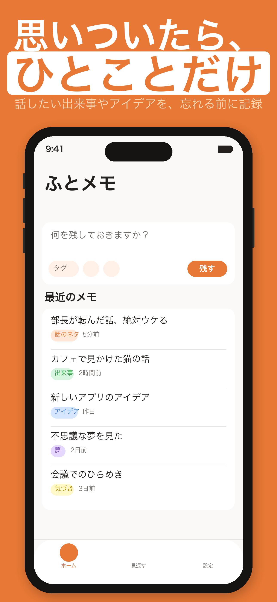
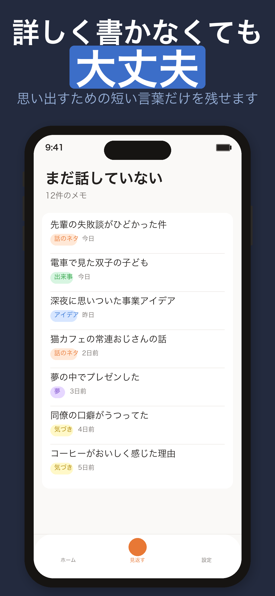
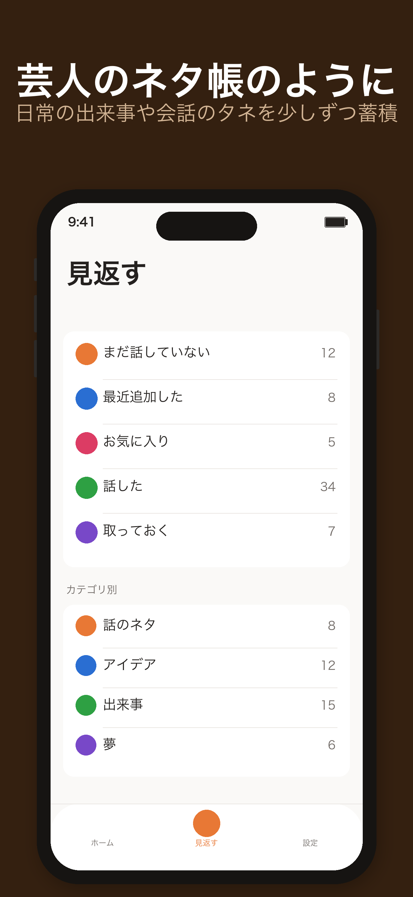
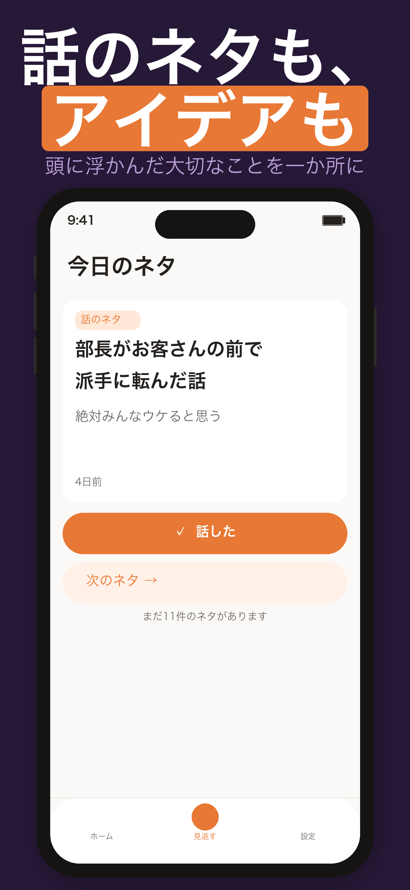
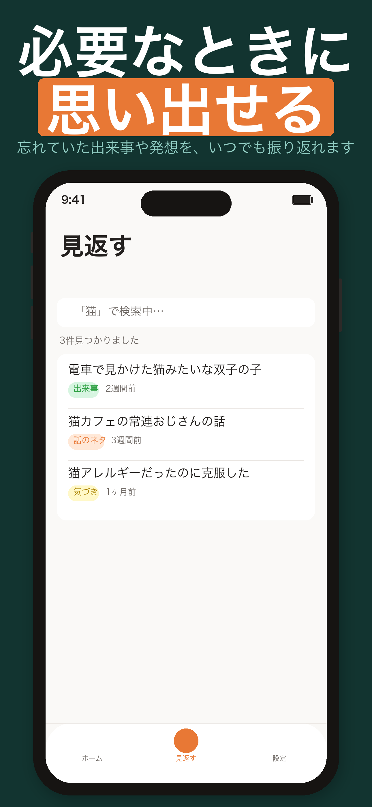

ネタ帳の使い方とよくある質問
ネタ帳は、思いついた出来事、話したい話題、アイデアや気づきを、忘れる前にひとことで残すためのメモアプリです。
芸人のネタ帳のように、日常の小さな発見や会話の話題を短い言葉でためておき、必要なときにすぐ取り出せます。 長い文章を書く必要はありません。自分が後から思い出せる、ひとことだけで十分です。

ホーム画面
起動したらすぐ入力

メモ一覧
見やすくすっきりと

見返す
話題をストック

ランダム表示
今日のネタを発見

検索
キーワードで探す
ホーム画面を開くと、すぐに入力欄が表示されます。「何を残しておきますか？」という欄に、思いついたことを短く書きましょう。 詳しい説明は必要ありません。
例：「先週の電車で見かけた猫のリュック」「Aさんに話す → 先月の温泉旅行」「アプリ案：歩数で木が育つやつ」
入力したら右下の「残す」ボタンをタップするだけ。カテゴリや写真は、後から追加することもできます。まず一言だけ残すことが大切です。
保存すると、ホーム画面の「最近のメモ」に新しいメモが追加されます。
カテゴリボタン（タグアイコン）をタップしてカテゴリを設定できます。カメラアイコンから写真の添付も可能です。 いずれも任意で、設定しなくても保存できます。
マイクボタンをタップすると音声入力モードになります。話した内容が自動でテキストに変換されます。 初回使用時は「マイク」と「音声認識」の許可が必要です。設定アプリ → ネタ帳 から許可できます。
下部の「見返す」タブを開き、「まだ話していない」を選ぶと、これから使いたいメモの一覧が表示されます。 「今日のネタ」ではランダムに1件表示されるので、話題を選ぶヒントにも使えます。
実際に話したメモを開き、状態を「話した」に変えましょう。これにより「まだ話していない」の一覧から外れ、整理できます。 削除する必要はありません。記録として「話した」一覧に残ります。
起動後すぐ入力できる。一言だけで保存可能。
マイクボタンで話すだけ。移動中の記録に。
ライブラリまたはカメラから写真を追加できる。
蓄積したメモをすばやく検索。入力のたびにリアルタイムで絞り込む。
「今日のネタ」でランダムに1件表示。忘れていた話題を発見。
気に入ったメモをお気に入り登録して素早く見返せる。
6種類のカテゴリで分類。未設定でもOK。
設定からメモをテキスト形式で書き出せる。
ホーム画面ウィジェットからメモを追加できる。
システム設定に合わせて自動切り替え。
メモには3つの状態があります。状態を使って「話した話題」と「まだ使っていない話題」を区別できます。
保存直後のデフォルト状態。「見返す」タブで「まだ話していない」を選ぶと、まだ使っていない話題の一覧を確認できます。飲み会や会話の前のチェックに活用しましょう。
実際に会話や場面で使ったメモに設定します。「まだ話していない」一覧から外れますが、削除はされません。「話した」一覧でいつでも振り返れます。
会話では使わないけれど、大切な記録として残しておきたいメモに使います。思い出や気づきなど、個人的な記録に適しています。
メモをタップして詳細画面を開き、状態のボタンをタップして選択できます。編集画面からも変更できます。
メモを6つのカテゴリに分類できます。カテゴリは任意で、設定しなくても保存できます。 「見返す」タブでカテゴリ別に絞り込んで表示することができます。
カテゴリを設定するには、入力欄左下のタグアイコン（カテゴリボタン）をタップします。 編集画面からも後から変更できます。